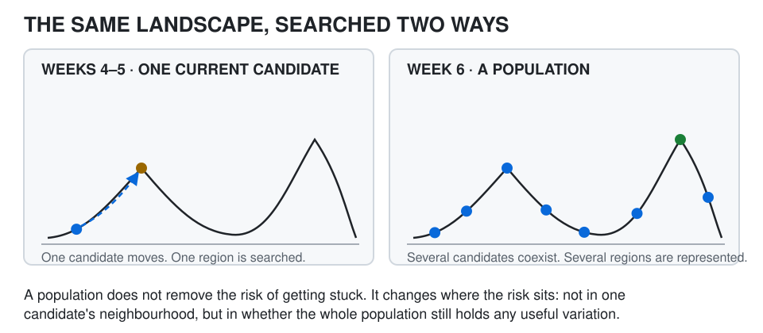
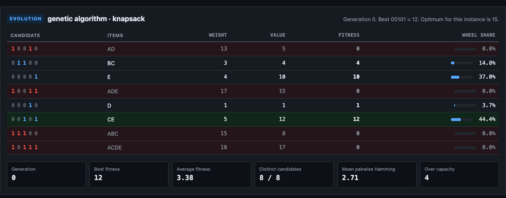
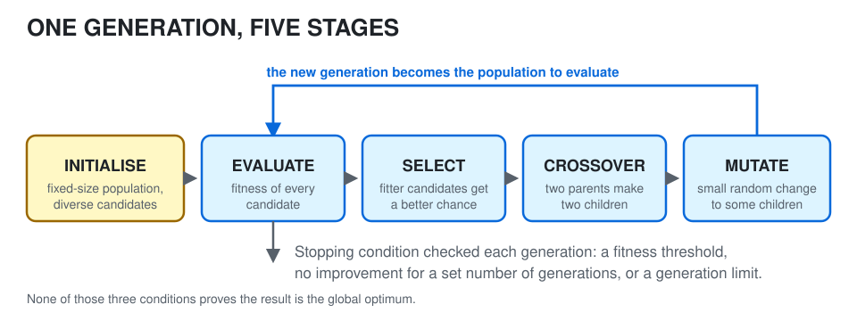
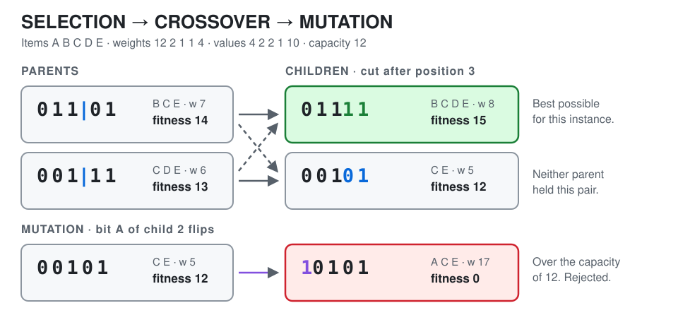
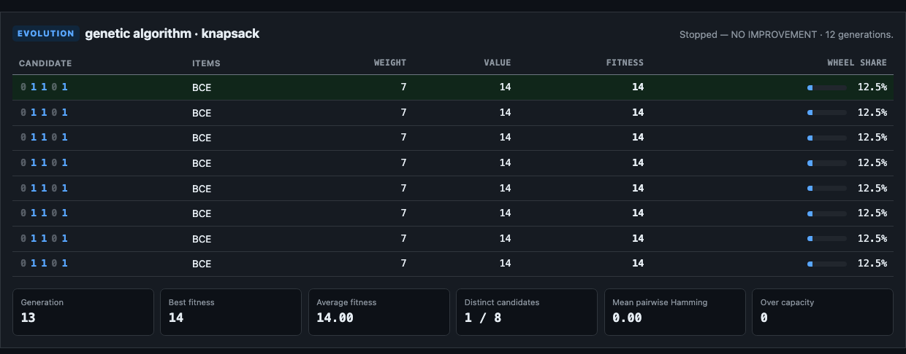
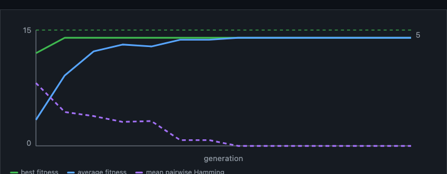
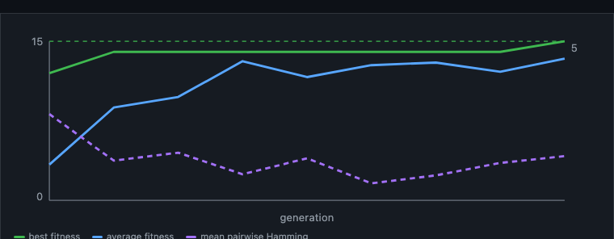
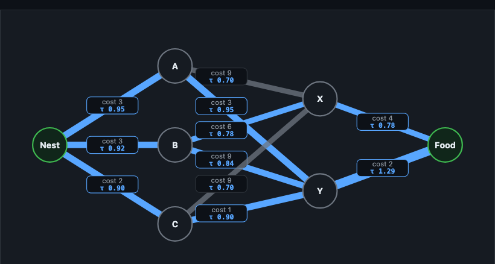
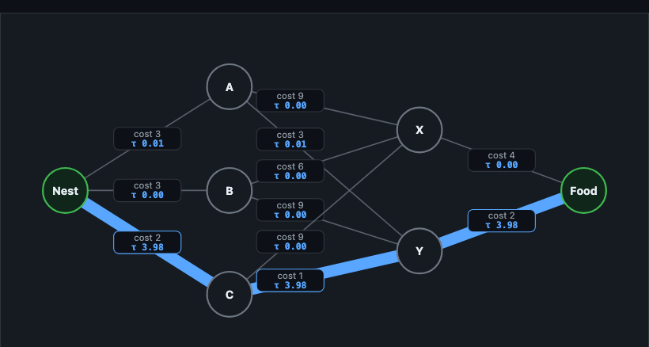

More than one candidate — why search with a population?
Up to Week 5, every method had one thing in common: there was one current solution. The algorithm could move it, restart it, change its neighbourhood or accept a worse move — but it followed one candidate at a time.
A population replaces that single candidate with a set of them.
A population is a set of candidate solutions, not a set of answers.
Every member is a possible answer under evaluation. A standard Genetic Algorithm still returns one result at the end. Returning several genuinely different solutions is a separate problem, and it belongs to multi-objective optimisation rather than to this week.
Replace one candidate with many
Return to the knapsack representation from Week 5. A candidate is five bits, one per item:
A B C D E
0 1 1 0 1A population is simply several of those at once:
01101 00111 10110 01010
10000 00110 01001 00011Now the search occupies several parts of the candidate space at the same time, which changes what getting stuck means.
If one candidate sits in a poor region, others may still be somewhere useful. No single candidate carries the whole search any more.

More candidates do not automatically mean better search
A population creates possibilities and it creates cost. If every candidate must be evaluated, a population of 100 needs roughly a hundred evaluations per generation. A larger population covers more of the space and demands more computation, which is the same trade-off as always: broader search usually costs more.
Population-based search is not free parallel intelligence. It is a different way of allocating search effort.
Fitness turns candidates into comparable solutions
The formal notes introduce the metaphor as a mapping: an environment becomes a problem, an individual becomes a solution, and fitness becomes that solution's value — which in turn becomes its chance of seeding new solutions.
For knapsack we use the five items from the formal example, and state the capacity explicitly so that every number on this page can be checked:
| Item | A | B | C | D | E |
|---|---|---|---|---|---|
| Weight | 12 | 2 | 1 | 1 | 4 |
| Value | 4 | 2 | 2 | 1 | 10 |
with a capacity of 12. So 01101 selects B, C and E, weighs 2 + 1 + 4 = 7 and is worth 2 + 2 + 10 = 14.
A candidate that exceeds the capacity is not a solution at all. We give it a fitness of 0, which keeps it visible in the population while making it unusable by selection. The best feasible candidate for this instance is 01111 — items B, C, D and E, weight 8, value 15.
Fitness is problem-specific. Here larger is better. Elsewhere a cost may be minimised instead. What matters is that the algorithm has one consistent way to compare candidates.
Fitness is what makes a population more than a pile of bit strings. Without one consistent evaluation there is nothing for selection to prefer, and the population is just storage.
Where a population starts
The formal notes describe the initial population as fixed in size, usually generated randomly within the problem's constraints, and ideally holding candidates with diverse characteristics — because diversity is a major consideration.
The reason is easy to see. Compare a population of six different bit strings with a population of the same string repeated six times. Both contain six candidates.
Only one contains any variation, and a population with no variation has numbers but no breadth.
Here is a real generation 0, drawn randomly by the Population Lab:

0, so they take no share of the selection wheel. The best candidate here is 00101 — items C and E, worth 12. Screenshot created for these pages from the Population Lab; no external image licence is used.Notice that random initialisation within a constrained problem routinely produces infeasible candidates. How an implementation handles them is a design decision, not a detail.
Why this matters this week
Week 5 tried to help one solution escape. This week changes the architecture: a population gives us several candidates, fitness gives us a way to compare them, and diversity keeps different possibilities alive.
Now we need a mechanism for turning one population into the next.
Evolve a solution — selection, crossover and mutation
The formal material presents a Genetic Algorithm as initialisation followed by a repeating loop of selection, crossover and mutation, ending at a stopping condition.

The stages are not four names for the same thing. Each one does a job the others cannot, and the next four sections are about what each one actually contributes.
Selection — who influences the next generation?
If every candidate had the same chance to reproduce, fitness would barely influence the search. Selection changes that. The formal notes describe choosing a portion of the population using a roulette-style draw in which better solutions are given more probability of being selected.
That wording is precise and worth keeping:
- being better does not guarantee reproduction
- being worse does not guarantee disappearance
Because selection is probabilistic, the population can favour good candidates without collapsing to a single answer in one step.
In Figure 2, 00001 holds 37% of the wheel and 00010 holds 3.7% — a strong bias, not a decision.
Crossover — combine parts of two candidates
Take two selected parents and cut them at the same point, then exchange the tails. With 11001 and 00110 cut after position 2, the formal notes produce 11110 and 00001. This is one-point crossover; the slides also mention multi-point variants.
crossover creates new combinations from material already present in the population
It does not certify them. A child can be better than both parents, between them, or worse than both — fitness evaluation decides.
And a crossover operator that makes sense for a bit string may make no sense for a route or a timetable, so representation still matters.
Mutation — introduce a small random change
After crossover, some children are mutated. For a bit string the formal notes show bit-flip mutation: pick a position at random and change it, turning 11110 into 10110. The slides also mention swap mutation.
The computational role is what counts.
Without mutation, the algorithm can only recombine information already in the population. Mutation can introduce a value that has gone missing entirely.
One worked generation
Take the two fittest candidates from a population — 01101 (fitness 14) and 00111 (fitness 13) — and cut after position 3:

01101 and 00111 at point 3 produces 01111, weight 8 and value 15 — the best feasible candidate for this instance, and one neither parent held. Mutating bit A of the second child gives 10101, weight 17, which breaks the capacity. Diagram created for these pages; no external image licence is used.Child 1 is better than either parent because each parent carried a different useful fragment. That is the attraction of crossover: the population can recombine partial structures that developed separately.
Child 2's mutation shows the other half of the story.
Crossover and mutation do not automatically preserve a problem's constraints.
An implementation may use a representation that can only produce valid candidates, reject or repair invalid ones, or penalise them through the fitness function. Here we reject: an over-capacity candidate scores 0. This is Week 2's point again — representation matters, and so does what the operators are allowed to build.
When does a genetic algorithm stop?
Selection says keep using what currently looks good. Mutation says do not let the population become too certain too early. That is the exploitation-versus-exploration theme from simulated annealing, in a new form.
The interesting behaviour lies between those extremes.
A Genetic Algorithm is not one exact implementation
The broad stages are stable, but population size, selection method, crossover method and rate, mutation method and rate, replacement strategy and stopping condition can all change. So Genetic Algorithm names a family of related implementations rather than one fixed piece of code.
Three practical stopping conditions
The formal notes give three: a set number of generations, no improvement in the best solution for some number of generations, or a fitness value above a predefined threshold. They correspond to we have spent our budget, the search appears to have saturated and this is good enough.
Notice what none of them establishes: that the result is the global optimum. Metaheuristic search usually stops because it is good enough or has stopped improving — not because optimality has been proved.
Why this matters this week
The search no longer moves one candidate through a neighbourhood. It transforms a population across generations, with selection biasing, crossover recombining and mutation varying.
That sounds powerful. But a whole population can still become too similar.
When evolution goes wrong — why diversity matters
Suppose that after several generations the population looks like this:
01101
01101
01101
01101
01101
01101The fitness is quite good — 01101 is worth 14, and the best possible is 15. But ask what crossover can do now. Take any two parents and cut them anywhere: both children are 01101 again.
Crossover cannot create novelty when the parents contain no variation to recombine.
This is the standard failure mode, and it has a name.
Premature convergence.
If the population becomes highly similar before it reaches a sufficiently good region of the search space, the Genetic Algorithm may suffer premature convergence: strong selection pressure removes variation, crossover stops producing anything new, and improvement stops even though better solutions exist.
It is the population version of Week 5's problem. There, one solution was trapped in one local region. Here, many solutions become so similar that the whole population searches one narrow region. The algorithm still holds many individuals; from a search point of view they are nearly redundant.
Watch it happen
The Population Lab runs exactly this. With the mutation rate set to 0, the default run collapses:

01101; distinct candidates is 1 of 8 and mean pairwise Hamming distance is 0.00. The run stops on “no improvement”, holding 14 when 15 was available. Screenshot created for these pages from the Population Lab; no external image licence is used.The cruel detail is how close it got. 01101 and 01111 differ in exactly one bit — item D. No crossover of identical parents can ever add it. Only mutation can.
Measuring diversity
The lab reports two numbers, and they are not equally good.
Distinct candidates simply counts how many different bit strings the population holds. It is easy to read and it is a rough proxy for diversity, not a definitive metric: eight candidates that differ in one bit each score the same as eight that differ in four.
Mean pairwise Hamming distance is the average number of bit positions in which two members of the population differ. It reaches 0 only when every candidate is identical, and it degrades smoothly as variation drains away, which makes it the more informative of the two.
The mutation-rate experiment
Run the same algorithm twice from the same seed, changing only the mutation rate.
Run A — mutation rate 0 | Run B — mutation rate 0.06 |
|---|---|
 |  |
| Best fitness stops at 14. Average fitness climbs to meet it. Diversity falls to zero and stays there. | Best fitness reaches the dashed line at 15. Diversity dips, recovers and never collapses. |
Figure 6. The same seed, the same population size, the same selection and crossover. The dashed green line is the best achievable fitness for this instance. Reading the purple diversity trace against the green best-fitness trace is the whole experiment. Screenshots created for these pages from the Population Lab; no external image licence is used.
The useful question is not which run scored higher. It is:
What happened to diversity before the search stopped improving?
That makes mutation's role visible as a search mechanism rather than a biological decoration.
Too little and too much
Too little mutation and selection gradually makes the population uniform, so the search becomes purely exploitative and converges early. Too much and useful structure is destroyed as fast as it is found, so the search drifts towards random sampling. There is no universal setting that is best for every problem.
Fitness shapes the pressure
Selection is guided by fitness, so the shape of the fitness function influences the direction of the search. If one region scores much better early, selection may commit to it before alternatives have had time to develop. Which returns us to Week 2:
how we represent and evaluate a problem changes what the algorithm can discover
Why this matters this week
Population-based search avoids placing the whole search on one trajectory, but it can still become trapped if the population loses variation. That makes diversity an active search resource rather than a pleasant property.
We have now seen one population mechanism based on evolution. The second half of the week asks something different: can many simple agents produce useful search behaviour without any one agent knowing the whole solution?
No leader required — how can a colony search?
The formal Other Meta Heuristic Searches material introduces several population-based techniques inspired by collective behaviour. It lists many; we develop the underlying computational idea rather than memorising a catalogue of animal names.
Ant Colony Optimisation
The notes describe Ant Colony Optimisation as inspired by ant behaviour and as a multi-agent, collective, decentralised, self-organised search. It was introduced by Marco Dorigo in 1992 and first applied to the Travelling Salesman Problem before being used for other routing problems.
The mapping the slides give is direct: nest and food become nodes in a graph, ants become artificial agents, pheromone becomes an artificial value on the graph, and foraging becomes random walks guided by the pheromone.
Route cost and pheromone are different things
This distinction carries the whole algorithm.
A route has a cost — distance, time, energy — which is a fixed property of the problem. The algorithm separately maintains an artificial pheromone value on each edge, which is search information the colony accumulates and which changes as ants explore.
Pheromone is not the route cost. It is a reinforced signal stored in the environment rather than inside any agent.


NEST → C → Y → FOOD, the cheapest of the six routes at 5, while the rest has evaporated towards zero. Screenshot created for these pages from the Population Lab; no external image licence is used.Reinforcement and evaporation
An individual ant has only local information. It chooses where to move next, completes a route, and its route contributes to the colony's shared signal. The next ant then searches an environment whose pheromone has changed.
The formal algorithm updates pheromone using the tour cost, so cheaper routes deposit more. That is reinforcement, and on its own it is unstable: an early accidental preference would keep being reinforced simply because it keeps being sampled.
Practical ACO therefore pairs it with evaporation — every edge loses a fraction of its pheromone each round, before the new deposits are added.
τ ← (1 − ρ) × τevery edge loses a share of its old value, so old information fades
τ ← τ + Q / costevery ant adds to the edges it used, and cheaper routes add more
Reinforcement strengthens the evidence for routes that turned out well. Evaporation weakens old information, so the signal reflects recent routes rather than everything ever deposited.
Without evaporation, nothing is ever forgotten: the initial uniform pheromone and every early accidental deposit stay in the totals, and the colony takes far longer to commit to anything. This is the exploration-and-exploitation balance again, now stored in the environment rather than in a temperature or a mutation rate.
Artificial ants do not simply take the strongest edge.
They choose probabilistically, with the chance of each edge influenced by its pheromone and by problem-specific information such as distance. An edge with the most pheromone is the most likely next step — not the certain one. That is what stops one early reinforcement from closing the search down.
Which ant knows the best route?
Possibly none of them. Each ant completes one route using local information and a random draw. The useful search behaviour belongs to the colony-level process, and it is stored in the pheromone values rather than in any individual.
Metaphor is not mechanism
The slides use bees as a second collective example, in phases: scouts explore for food sources, sources are exploited, returning bees communicate quality through a waggle dance, better sources attract more recruits through positive feedback, and scouts resume exploring when a source is exhausted.
The recurring pattern is what to take away:
- explore
- evaluate
- communicate
- reinforce
- explore again
That is conceptually related to Ant Colony Optimisation even though the metaphor and the algorithm differ. The highlighted step is the one that makes the cycle a search rather than a survey.
Evolution and collective intelligence are not the same algorithm
A Genetic Algorithm keeps a population of candidate solutions and transforms it by selection, crossover and mutation across generations. Ant Colony Optimisation keeps a population of agents that construct routes and share a pheromone signal. Artificial Bee Colony keeps agents that explore, evaluate and recruit towards better sources.
They are not interchangeable, and the formal notes are explicit that there is no best algorithm among them — each has strengths and weaknesses and suits particular purposes. What they share is a move away from one-current-solution search.
Do not confuse metaphor with mechanism
It is easy to remember a list of animals and forget what the algorithms do. A metaphor is only useful once we can translate it into computation.
| Ant Colony Optimisation | Genetic Algorithm | ||
|---|---|---|---|
| ant | artificial search agent | individual | candidate solution |
| route | candidate solution | fitness | evaluation |
| pheromone | shared search signal | reproduction | generation of new candidates |
| reinforcement | stronger influence on future choices | mutation | variation |
If we cannot make that translation, the animal name has not taught us anything. Nature-inspired optimisation is not about copying an animal story — it is about identifying a search mechanism and implementing that mechanism computationally.
Why this matters this week
We began by representing one problem, searched it blindly, added heuristic guidance, improved one candidate locally, gave that candidate ways to escape, and now let many candidates or agents contribute at once.
The recurring lesson is not that one algorithm is smartest. It is that changing the information, representation and search structure changes what becomes possible.
The travelling salesman — the problem this week was built for
Every problem so far has had a start and a goal, and a solution has been a path from one to the other. Farmer Jones, the maze, the route between two hospitals: begin here, finish there.
The travelling salesman problem does not work like that.
A solution is not a path. It is an ordering of every city, and it has to come home.
There is no goal state to search towards. Breadth-first search, depth-first search and uniform-cost search all expand outward from a start until a goal appears — and here every candidate visits every city, so there is nothing for them to recognise.
Small enough to do by hand
The formal notes give a four-city instance. Work it out before reading on:
A-B-D-C-A at 19. Diagram created for these pages; no external image licence is used.Three candidates. Check all three, take the smallest, and you are certain you have the best — no heuristic, no population, no cleverness required.
Why that stops working immediately
The number of distinct tours over n cities is (n−1)! / 2:
| Cities | Tours |
|---|---|
| 4 | 3 |
| 10 | 181,440 |
| 15 | 43,589,145,600 |
| 20 | 60,822,550,204,416,000 |
At a million tours checked every second, twenty cities takes about 1,900 years. Checking every candidate is not a slow algorithm — past a certain size it is not an algorithm at all.
A delivery round, a school-bus route or a drilling schedule for a circuit board is not four stops. This is the shape of problem the whole second half of this module exists for.
So which of them would you use?
You now have restarts, variable neighbourhood search, simulated annealing, a genetic algorithm and an ant colony. Every one of them can be pointed at this problem, and every one of them needs something defined first.
None of those is supplied by the problem. Each one is a design decision, and each one changes what the search can find.
What does "nearby" mean for an ordering?
Two answers are obvious enough that the room usually produces both: swap two cities in the order, or reverse a stretch of it. They sound like the same kind of change. They are not.
A-H-B-E-G-F-C-D-I-A costs 72 and crosses itself; all twenty-eight ways of swapping two cities in that order cost 72 or more, so hill climbing stops. On the right, reversing the single stretch E-G-F-C-D-I gives 62 — the best tour there is. Diagram created for these pages; no external image licence is used.You can see the crossing. The algorithm cannot — not because it is looking at the wrong tour, but because no swap of two cities in that order can undo it. One reversal does, and it reaches the best tour in a single move.
That is Week 5's third design choice arriving with consequences: the candidate, the evaluation and the starting point were all identical on both sides of that figure. Only the definition of a neighbour changed.
What crossover does to a tour
Take two perfectly good tours over six cities and cut them at the same point, exactly as Figure 4 did with bit strings:
parent 1 A B C D E F
parent 2 C E B F A D
| one-point crossover after position 3
child 1 A B C F A D A twice, no E
child 2 C E B D E F E twice, no ANeither child is a tour. The operator that produced this week's optimum from two bit strings destroys the problem here, and no amount of fitness evaluation repairs it — an ordering that visits A twice is not a worse answer, it is not an answer.
This is the note from Highlight 2 arriving as a consequence.
Crossover and mutation do not automatically preserve a problem's constraints. For the knapsack we could reject an over-capacity candidate with a fitness of 0 and carry on. Here, almost every child would be rejected. A genetic algorithm for tours needs an operator built for orderings — or a representation in which any string is a valid tour.
And this is where the colony started
Ant Colony Optimisation was first applied to exactly this problem, and the fit is direct: cities are nodes, a tour is a route an ant completes, and pheromone accumulates on the edges that cheap tours use. The six-route graph in Highlight 4 was a simplification chosen so that reinforcement and evaporation stayed readable on one screen — this is the problem the method was designed for.
Try it yourself
Start with the small instance, where the answer can be checked by hand:
Four cities with these distances:
A-B 3, A-C 8, A-D 5, B-C 7, B-D 2, C-D 6
A tour visits every city exactly once and returns to the start.
Write Python that lists every distinct tour with its total
distance, then prints the shortest. Treat a tour and its
reverse as the same tour. Do not use a heuristic or a library
solver.Then the one that cannot be checked by hand:
Nine cities, with (x, y) coordinates:
A 1,15 B 12,12 C 13,2 D 18,6 E 3,4
F 7,3 G 0,1 H 14,16 I 13,6
The distance between two cities is the straight-line distance
between their coordinates, rounded to the nearest whole
number. A tour visits every city exactly once and returns to
the start.
Write Python that starts from the tour A-H-B-E-G-F-C-D-I-A and
applies hill climbing, where a neighbouring tour is one
produced by swapping two cities in the order. Stop when no
neighbour is shorter. Print the starting tour and its length,
every improving move, and the final tour and its length.It will stop at 72. Now change one thing — the definition of a neighbour — and run it again:
Nine cities, with (x, y) coordinates:
A 1,15 B 12,12 C 13,2 D 18,6 E 3,4
F 7,3 G 0,1 H 14,16 I 13,6
The distance between two cities is the straight-line distance
between their coordinates, rounded to the nearest whole
number. A tour visits every city exactly once and returns to
the start.
Write Python that starts from the tour A-H-B-E-G-F-C-D-I-A and
applies hill climbing, where a neighbouring tour is one
produced by reversing any stretch of the order. Stop when no
neighbour is shorter. Print the starting tour and its length,
every improving move, and the final tour and its length.Same cities, same distances, same starting tour, same rule for accepting a move. One line of difference, and one of them finds the best tour there is.
Why this matters this week
Nothing in this module has been a competition between algorithms. The travelling salesman problem is where that becomes obvious: every method of the last two weeks can attack it, none of them can be pointed at it unmodified, and what each one needs first is a decision about representation — an ordering, a neighbourhood, an operator, a graph.